Responsive Redesign
Motivation
Let Them Eat Cake is a local dessert shop from my hometown that I have
fond memories of. While their website is unique and artsy, there are clear
usability and accessibility issues. This responsive redesign intends to
address these issues to improve the experience of interacting with the
site.
Link to Original Site
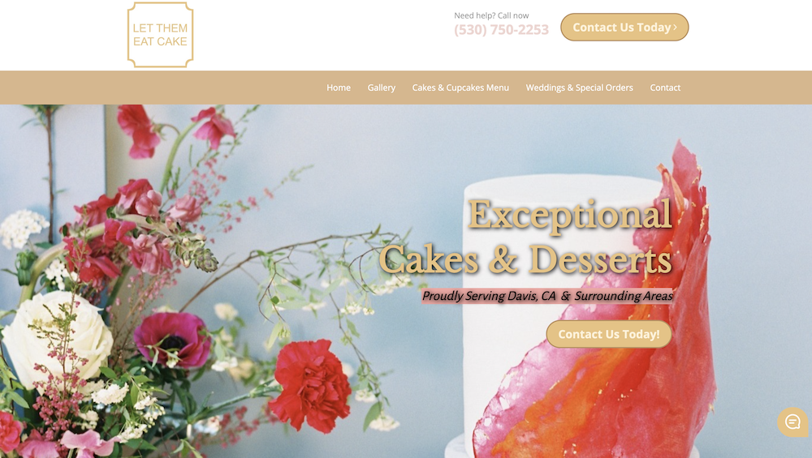
Finding Problems
Conceptual model
The site intends to guide you towards direct communication with the
bakery, either through sending them a message, or ordering from their
selection and making requests for special events. To achieve this, there
are multiple contact related buttons and links. There is a secondary goal
of encouraging in-person visits through listing store location and hours,
as well as allowing users to browse their menu and gallery of sweets.
However, there are several issues with how the site goes about this.
Learnability
-
While the site is pretty straightforward to navigate, with a linear
organization and a navbar at top, relevant buttons don’t pop out too
well, and are laid out in seemingly random pages throughout the page.
-
There are two identical contact buttons that can be seen at the same
time in the viewport and a third link to the same page, which could be
confusing.
-
The text and background colors/images aren’t very high contrast, so it
can be difficult to read the page content.
-
The location and hours of the shop are at the very bottom embedded in a
kind of small footer area, making it easy to miss.
-
It is initially unclear what exactly store is selling, missing relevant
imagery and text; a menu preview could be helpful.
- The double navigation bar is unnecessary and could be confusing.
Memorability
-
Because of the excessive buttons, it can be difficult to recall which
brings you to where you want.
-
Similarity of sections also makes it hard to recall and ambiguous what
to do; do I use the Get in Touch section or the Contact section?
Efficiency
-
Since there are so many buttons that will lead you to the contact page,
although again, users may be confused and spend time figuring out where
to navigate to.
- The map and hours in the footer are hard to find quickly.
Accessibility
Analyzing the accesibility of the site with WAVE, here are the findings:
- Lots of color contrast errors (18)
- A few broken and empty buttons and links/redundant link
- Missing alt text and form labels
- Generally well structured elements, with a few warnings
In general, I definitely agree with the WAVE accessibility assessment,
especially with the color contrast issues throughout the page. There are
also a few broken or empty navigation buttons and links and a redundant
link. There is some thought put into the HTML structure of the page and
ARIA accessibility, but missing form control labels and alternative text
for image indicate room for improvement.
Visual Redesign
Sketches
To start the process of the redesign, I quickly sketched some preliminary
ideas:
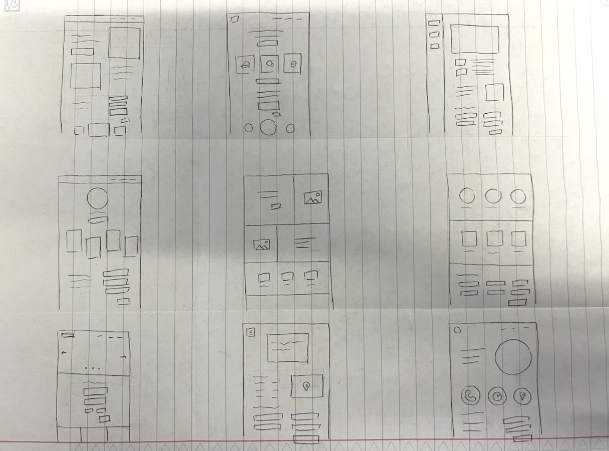
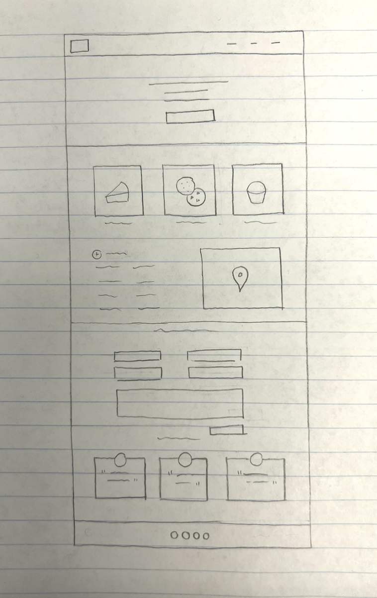
Low Fidelity Mockups
Then, I turned my ideas into low-fidelity mockups in Figma to plan out the
overall layout I wanted to achieve. To account for various screen sizes, I
created three mockups for desktop, tablets, and mobile.
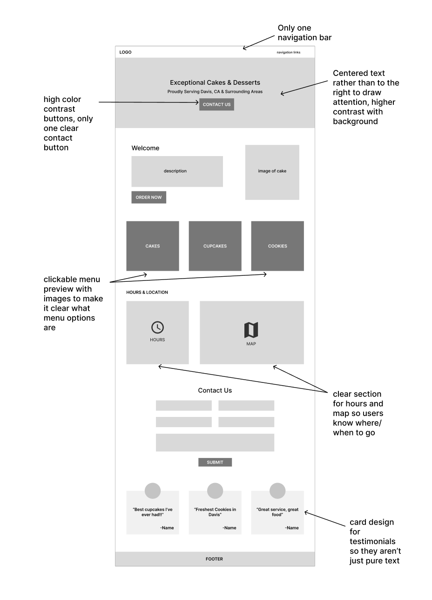
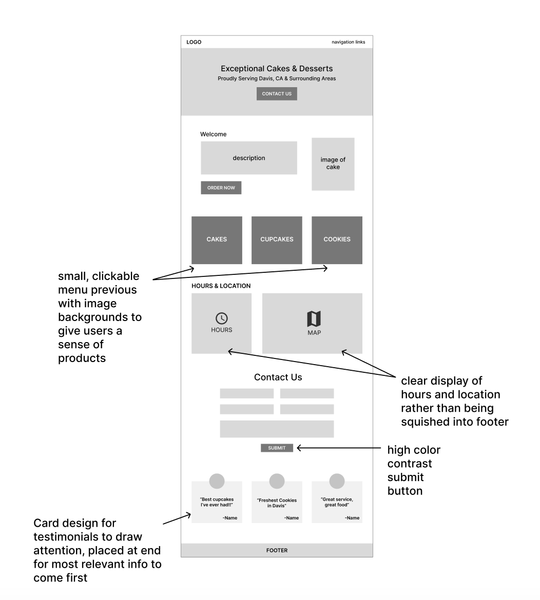
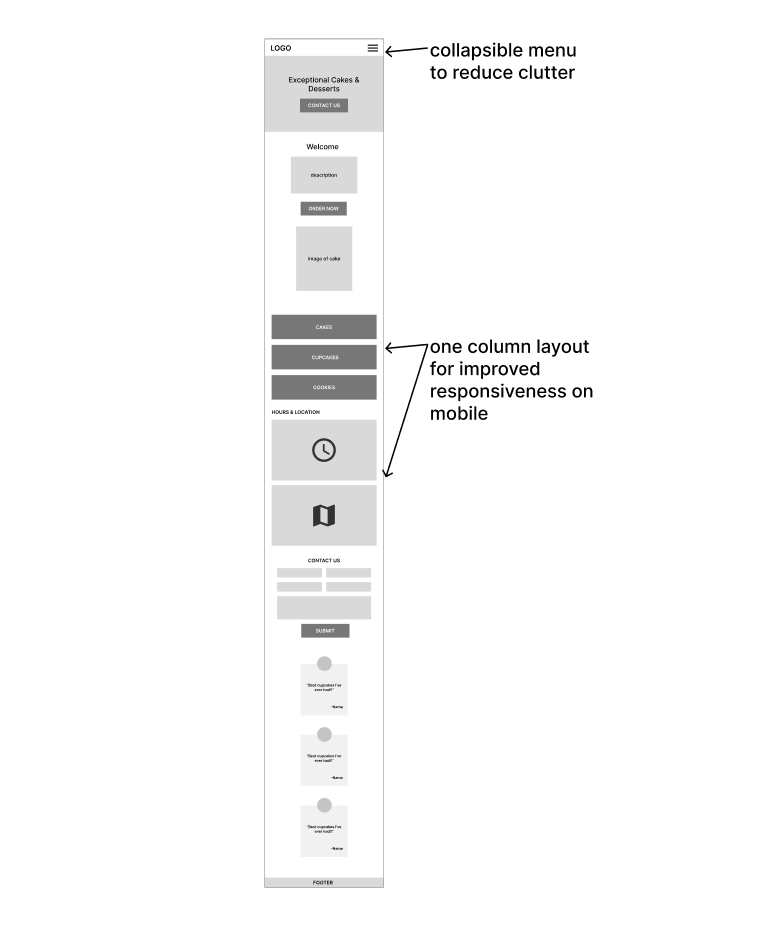
High Fidelity Mockups
As the final step in the mockup process, I created high-fidelity mockups
to flesh out colors, typography, and the components of the website.
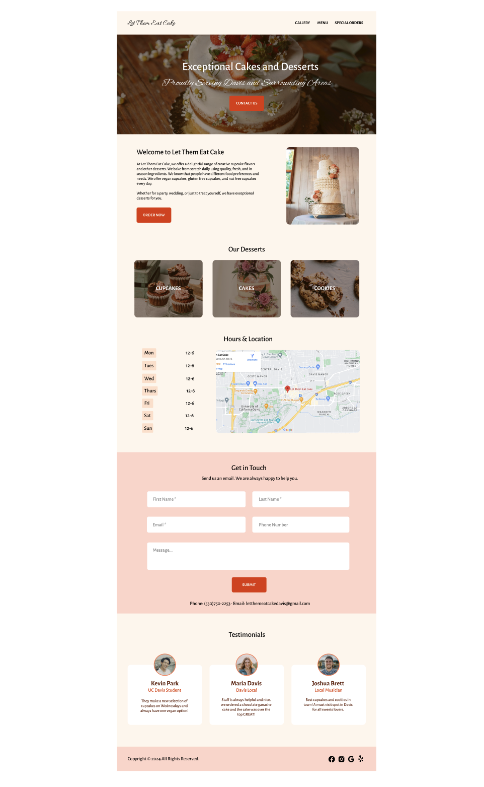
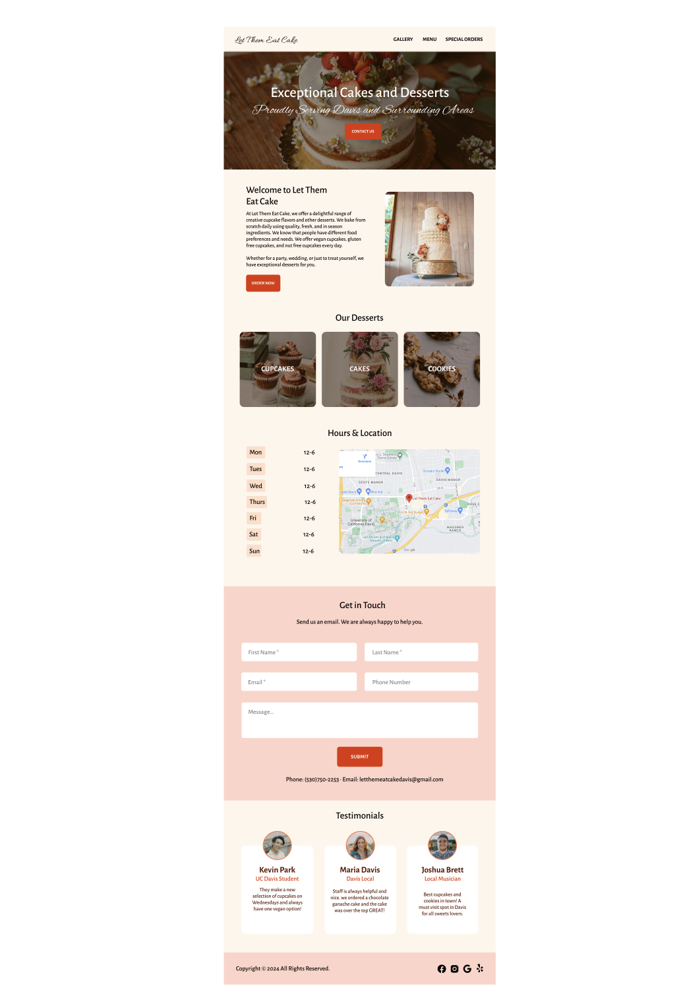
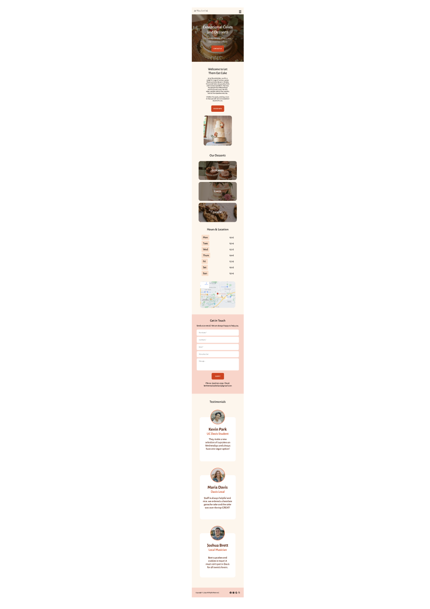
Visual Style Guide
While developing the high-fidelity prototypes, I also put together a visual
style guide to ensure that the overall aesthetic was cohesive.
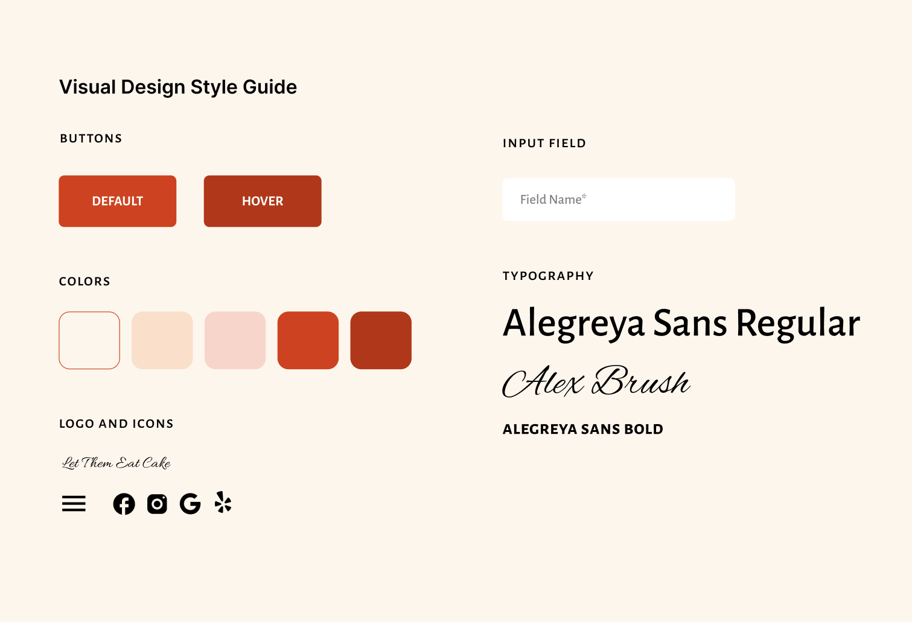
The Redesign
Finally, it was time to code up the redesigned site using HTML/CSS and a
bit of JavaScript.
Notable Features and Revisions
I made a few significant UI revisions to the original site to address some
of the issues identified early on.
-
The original sites have links to order forms that rotate seasonally
right after the first section. I replaced this section with an order now
button that leads to another page where users can access these forms.
This choice was made due to the seasonal nature of it, and I found that
placing something so specific early on in the home page was distracting.
-
I included an "Our Desserts" section to provide users with a menu
preview of what is offered, with each image button intended to link to
the respective part of the menu.
-
I moved the hours and location to a more prominent location on the page
rather than squishing it into the footer.
-
I kept the footer simple and placed the contact and location information
in relevant sections of the page instead.
JavaScript Additions
-
The Contact Us Button scrolls smoothly to the contact section of the
page rather than linking to another page
-
When the screen size drops below 800px, I collapse the navbar items into
a hamburger menu, which opens up a mobile dropdown.
The Results
Link to Redesigned Site
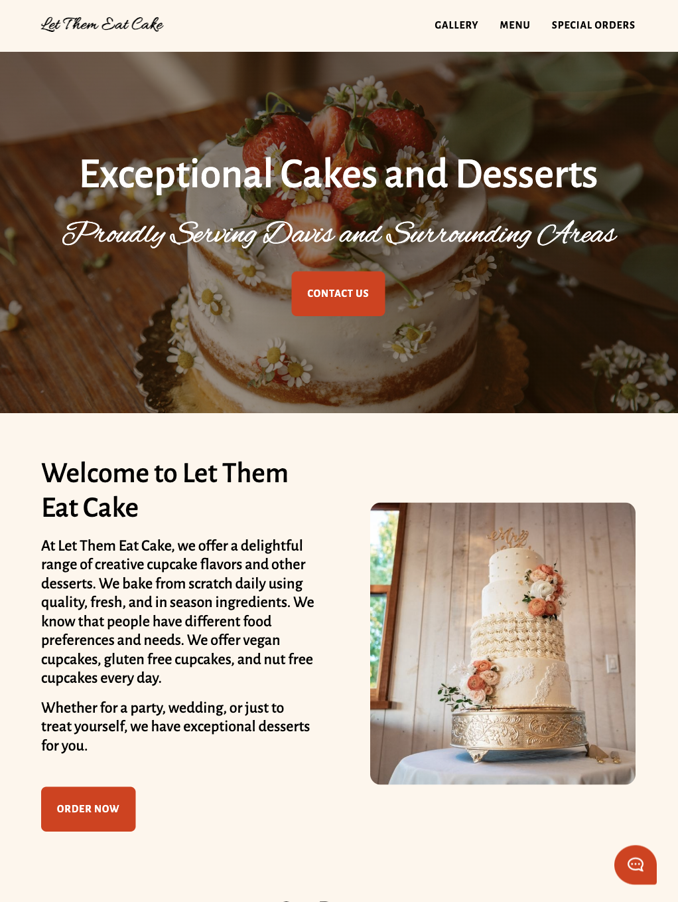
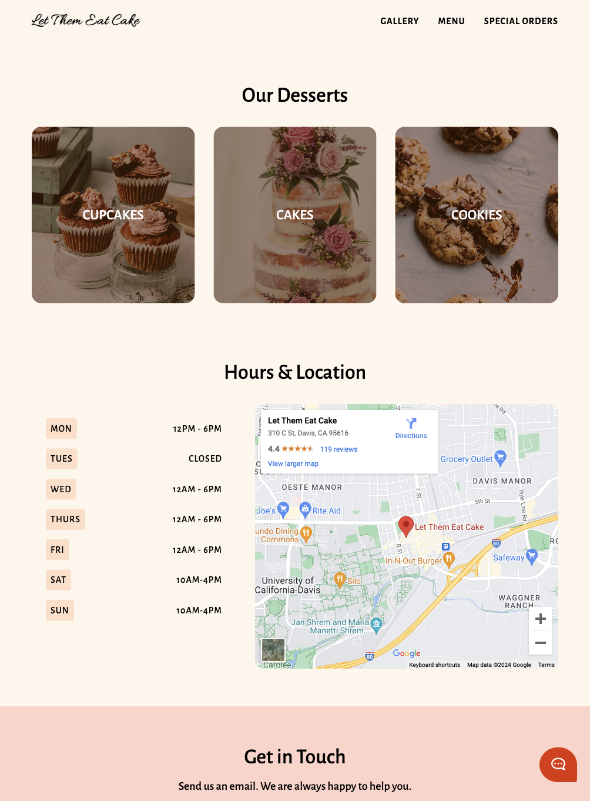
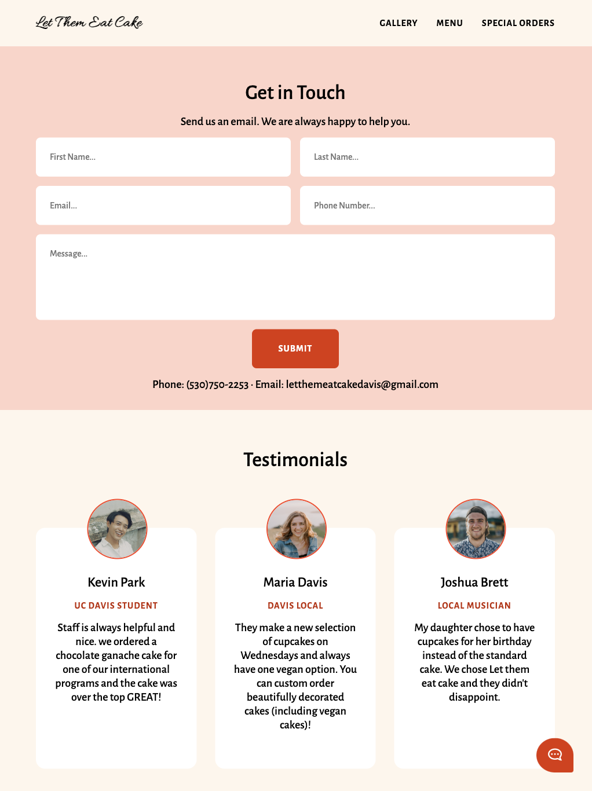